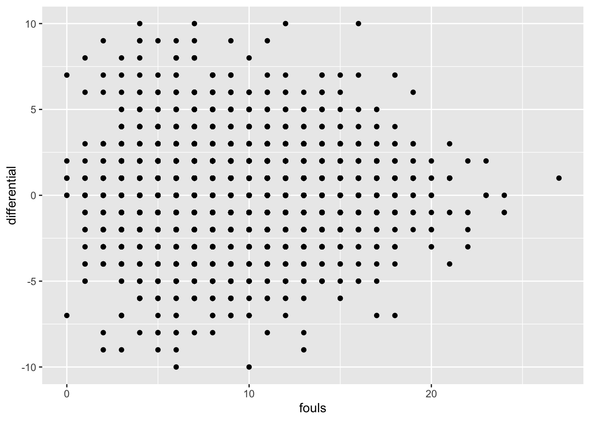

library(tidyverse)9 Correlations and regression
Throughout sports, you will find no shortage of opinions. From people yelling at their TV screens to an entire industry of people paid to have opinions, there are no shortage of reasons why this team sucks and that player is great. They may have their reasons, but a better question is, does that reason really matter?
Can we put some numbers behind that? Can we prove it or not?
This is what we’re going to start to answer. And we’ll do it with correlations and regressions.
First, we need data from the 2024 women’s college soccer season.
For this walkthrough:
Then load the tidyverse.
Now import the data.
correlations <- read_csv("https://raw.githubusercontent.com/dwillis/NCAAWomensSoccerData/main/data/ncaa_womens_soccer_matchstats_2024.csv")Rows: 6451 Columns: 36
── Column specification ────────────────────────────────────────────────────────
Delimiter: ","
chr (6): team, opponent, home_away, outcome, minutes, defensive_minutes
dbl (29): team_score, opponent_score, overtime, gp, goals, assists, points,...
date (1): date
ℹ Use `spec()` to retrieve the full column specification for this data.
ℹ Specify the column types or set `show_col_types = FALSE` to quiet this message.To do this, we need all college soccer teams and their season stats from last year. How much, over the course of a season, does a thing matter? That’s the question you’re going to answer.
In our case, we want to know how much does a team’s fouls influence the number of goals they score in a season? How much difference can we explain in goals with fouls?
We’re going to use two different methods here and they’re closely related. Correlations – specifically the Pearson Correlation Coefficient – is a measure of how related two numbers are in a linear fashion. In other words – if our X value goes up one, what happens to Y? If it also goes up 1, that’s a perfect correlation. X goes up 1, Y goes up 1. Every time. Correlation coefficients are a number between 0 and 1, with zero being no correlation and 1 being perfect correlation if our data is linear. We’ll soon go over scatterplots to visually determine if our data is linear, but for now, we have a hypothesis: More fouls are bad. Fouls hurt. So if a team gets lots of them, they should have worse outcomes than teams that get few of them. That is an argument for a linear relationship between them.
But is there one?
We’re going create a new dataframe called newcorrelations that takes our data that we imported and adds a column called differential which is the difference between goals and defensive_goals, and then we’ll use correlations to see how related those two things are.
newcorrelations <- correlations |>
mutate(
differential = goals - defensive_goals
)In R, there is a cor function, and it works much the same as mean or median. So we want to see if differential is correlated with fouls, which is the yards of penalties a team gets in a game. We do that by referencing differential and fouls and specifying we want a pearson correlation. The number we get back is the correlation coefficient.
newcorrelations |> summarise(correlation = cor(differential, fouls, method="pearson"))# A tibble: 1 × 1
correlation
<dbl>
1 0.0181So on a scale of -1 to 1, where 0 means there’s no relationship at all and 1 or -1 means a perfect relationship, fouls and whether or not the team scores more goals than it gives up are at 0.01806104 You could say they’re 1.8 percent related toward the positive – more fouls, the higher your differential. Another way to say it? They’re almost 98 percent not related.
What about the number of yellow cards instead of fouls? Do more aggressive defensive teams also score more?
newcorrelations |> summarise(correlation = cor(differential, yellow_cards, method="pearson"))# A tibble: 1 × 1
correlation
<dbl>
1 -0.0723So wait, what does this all mean?
It means that when you look at every game in college soccer, the number of goals and yellow cards do have a small impact on the score difference between your team and the other team. But the relationship is barely anything at all. For yellow cards, it’s a negative correlation of about 7 percent. So like 93+ percent plus not related. So neither fouls nor yellow cards have much of any relationship with the difference in goal-scoring.
Normally, at this point, you’d quit while you were ahead. A correlation coefficient that shows there’s no relationship between two things means stop. It’s pointless to go on. But let’s put this fully to rest.
Enter regression. Regression is how we try to fit our data into a line that explains the relationship the best. Regressions will help us predict things as well – if we have a team that has so many fouls, what kind of point differential could we expect? So regressions are about prediction, correlations are about description. Correlations describe a relationship. Regressions help us predict what that relationship means and what it might look like in the real world. Specifically, it tells us how much of the change in a dependent variable can be explained by the independent variable.
Another thing regressions do is give us some other tools to evaluate if the relationship is real or not.
Here’s an example of using linear modeling to look at fouls. Think of the ~ character as saying “is predicted by”. The output looks like a lot, but what we need is a small part of it.
fit <- lm(differential ~ fouls, data = newcorrelations)
summary(fit)
Call:
lm(formula = differential ~ fouls, data = newcorrelations)
Residuals:
Min 1Q Median 3Q Max
-10.0486 -1.0714 -0.0373 0.9969 10.0196
Coefficients:
Estimate Std. Error t value Pr(>|t|)
(Intercept) -0.065158 0.077276 -0.843 0.399
fouls 0.011381 0.007845 1.451 0.147
Residual standard error: 2.264 on 6449 degrees of freedom
Multiple R-squared: 0.0003262, Adjusted R-squared: 0.0001712
F-statistic: 2.104 on 1 and 6449 DF, p-value: 0.1469There’s three things we need here:
- First we want to look at the p-value. It’s at the bottom right corner of the output. In the case of fouls, the p-value is 0.1469. The threshold we’re looking for here is .05. If it’s less than .05, then the relationship is considered to be statistically significant. Significance here does not mean it’s a big deal. It means it’s not random. That’s it. Just that. Not random. So in our case, the relationship between fouls and a team’s aggregate point differential are not statistically significant. The differences in score difference and fouls could be completely random. This is another sign we should just stop with this.
- Second, we look at the Adjusted R-squared value. It’s right above the p-value. Adjusted R-squared is a measure of how much of the difference between teams aggregate point values can be explained by fouls. Our correlation coefficient said they’re not quite 2 percent related to each other, but fouls’ ability to explain the difference between teams? About 0.0001712 percent. That’s … not much. It’s really nothing. Again, we should quit.
- The third thing we can look at, and we only bother if the first two are meaningful, is the coefficients. In the middle, you can see the (Intercept) is -0.065158 and the fouls coefficient is 0.011381. Remember high school algebra? Remember learning the equation of a line? Remember swearing that learning
y=mx+bis stupid because you’ll never need it again? Surprise. It’s useful again. In this case, we could try to predict a team’s score differential in a game – will they score more than they give up – by usingy=mx+b. In this case, y is the aggregate score, m is 0.011381. and b is -0.065158. So we would multiply a teams total fouls by 0.011381 and then add -0.065158 to it. The result would tell you what the total aggregate score in the game would be, according to our model. Chance that you’re even close with this? Almost none. Did I say we should quit? Yeah.
So fouls are totally meaningless to the outcome of a game.
You can see the problem in a graph. On the X axis is fouls, on the y is point differential. If these elements had a strong relationship, we’d see a clear pattern moving from right to left, sloping down. On the left would be the teams with few fouls and a positive point differential. On right would be teams with high fouls and negative point differentials. Do you see that below?

9.1 A more predictive example
So we’ve firmly established that fouls aren’t predictive. But what is?
So instead of looking at fouls, let’s make a new metric: shots on goal. Can we predict the score differential by looking at the shots they put on goal?
First, let’s look at the correlation coefficent.
newcorrelations |>
summarise(correlation = cor(differential, so_g, method="pearson"))# A tibble: 1 × 1
correlation
<dbl>
1 0.602Answer: 60 percent. Not a perfect relationship, but pretty good. But how meaningful is that relationship and how predictive is it?
net <- lm(differential ~ so_g, data = newcorrelations)
summary(net)
Call:
lm(formula = differential ~ so_g, data = newcorrelations)
Residuals:
Min 1Q Median 3Q Max
-9.2804 -1.0389 0.0988 1.2365 5.8234
Coefficients:
Estimate Std. Error t value Pr(>|t|)
(Intercept) -2.13264 0.04233 -50.38 <2e-16 ***
so_g 0.37923 0.00626 60.58 <2e-16 ***
---
Signif. codes: 0 '***' 0.001 '**' 0.01 '*' 0.05 '.' 0.1 ' ' 1
Residual standard error: 1.808 on 6449 degrees of freedom
Multiple R-squared: 0.3627, Adjusted R-squared: 0.3626
F-statistic: 3670 on 1 and 6449 DF, p-value: < 2.2e-16First we check p-value: 0.00000000000000022. That’s sixteen zeros between the decimal and 22. Is that less than .05? Uh, yeah. So this is really, really, really not random. But anyone who has watched a game of soccer knows this is true. It makes intuitive sense.
Second, Adjusted R-squared: 0.3626. So we can predict about 36 percent of the difference in the score differential by simply looking at the shots on goal the team has.
Third, the coefficients: In this case, our y=mx+b formula looks like y = 0.37923x + -2.13264. So if we were applying this, let’s look at Maryland’s 3-2 loss to George Mason on Sept. 1, 2024. Maryland’s shots on goal in that game? 9. What does our model say the point differential should have been?
(0.37923*9)+-2.13264 [1] 1.28043So by our model, Maryland should have won by at least one goal. Some games are closer than others. But when you can explain 36 percent of the difference, this is the kind of result you get. What would improve the model? Using more data to start. And using more inputs.